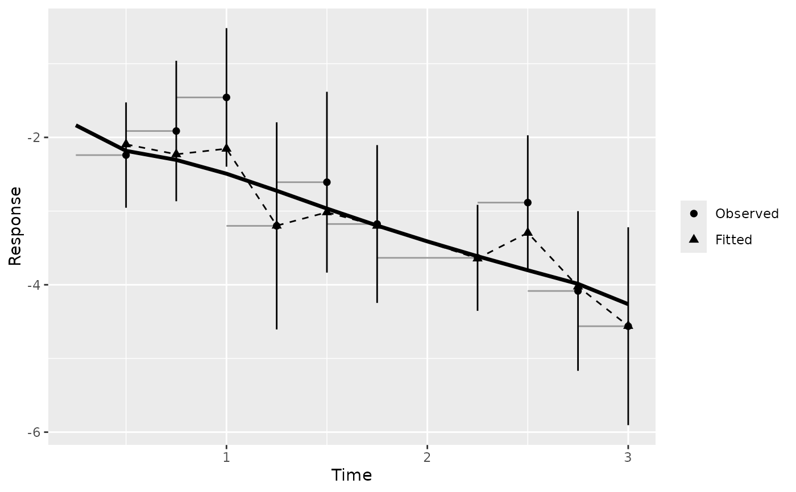
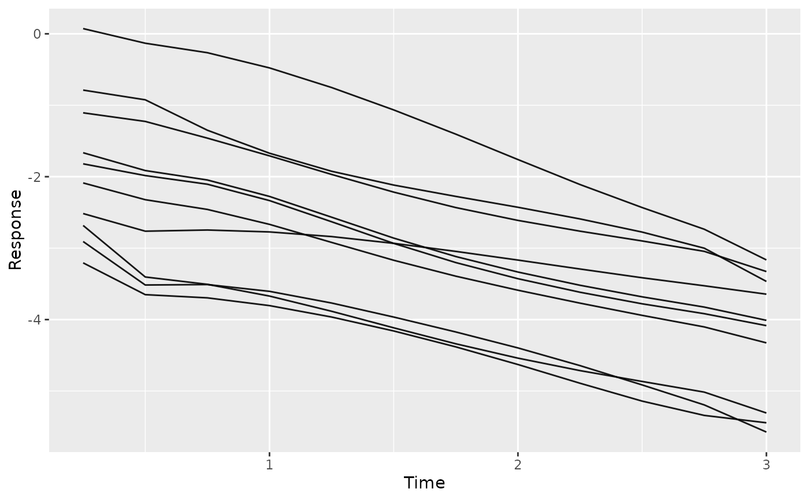

Compare observed and fitted values over follow-up time, binned by time, with an optional cohort mean curve.
Arguments
- object
A fitted
boostmtreeobject, or a fittedBoostMLRobject. Not a predict object: pass that aspred.- pred
Optional
boostmtreepredict object frompredict(fit, x = ...), used for the cohort curve.- n_bins
Number of equal-count time bins. Defaults to 10.
- breaks
Optional numeric vector of bin edges in the fit's time units. Overrides
n_bins.- ...
Not used; present for S3 consistency.
Value
A gg_boost_calibration data.frame with one row per response and
bin, ordered by response then time, with columns:
- response
Factor naming the response.
- bin
Factor bin label, ordered by time within each response.
- time_lo, time_hi
Numeric bin edges.
- time
Numeric median observed time within the bin.
- n_obs
Integer count of observations in the bin.
- n_subject
Integer count of distinct subjects in the bin.
- observed
Numeric mean observed value.
- observed_lo, observed_hi
Numeric 95\
NAwhen the bin holds one observation.- fitted
Numeric mean fitted value at the same observations.
When pred is supplied, the attribute cohort holds a data.frame
with columns response (factor), time and fitted (numeric).
Details
A cohort's predicted curves say what the model expects; they cannot say whether it matches the data. This figure answers that. Observations are binned by time, and each bin reports the mean observed value, the mean fitted value at the same observations, and how many observations and distinct subjects stand behind it.
Bins hold roughly equal numbers of observations by default: the edges are
quantiles of observed time, computed per response. Tied times, common in
clinical data where many measurements share a visit time, merge quantile
edges; duplicates are removed and a message says how many bins survived.
Supply breaks, in the fit's own time units, to choose the edges yourself.
Observations outside the range of breaks are dropped, with a message
giving the count.
With equal-count bins, n_obs is nearly constant by construction, so it
cannot show where data thins out. Two columns can: bin width
(time_hi - time_lo), which grows where observations are sparse, and
n_subject, which falls when a late bin rests on repeat measurements of a
few subjects.
The interval on observed is a normal approximation that treats
observations as independent. Repeated measurements within a subject make it
too narrow. Read it as a visual guide, not an inferential claim.
Supplying pred adds the cohort curve: the mean over subjects of the
predicted curves on a common time grid, attached as the cohort attribute.
Make pred with predict(fit, x = ...) and no tm or id; with them,
each subject is predicted at its own times and a mean across subjects
changes composition from one time to the next. The cohort curve is
available for boostmtree fits only.
This figure accepts either a boostmtree or a BoostMLR grow
fit. It reads its rows from gg_boost_trajectory, so both
backends' storage layouts are handled there.
Examples
# \donttest{
sim <- boostmtree::simLong(n = 25, n.time = 4, model = 1)$data.list
fit <- boostmtree::boostmtree(
x = sim$features, tm = sim$time, id = sim$id, y = sim$y,
M = 50, verbose = FALSE
)
pred <- predict(fit, x = fit$x)
gg <- gg_boost_calibration(fit, pred = pred)
plot(gg)

# The predicted curves themselves, for a look at who drives the tail:
plot(gg_boost_trajectory(pred), n_max = 10)
#> Drawing 10 of 25 subjects, chosen at random. Pass n_max = Inf to draw all, or subset to choose; call set.seed() first for a reproducible sample.

# }